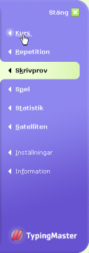

Du kan göra vilket skrivprov du vill eller använda din egen text. När du har slutfört kursen, kan du göra samma prov igen för att se hur mycket ditt skrivande har förbättrats.
För att göra ett prov, klicka på "Skrivprov" i programmenyn till höger.
För att gå tillbaka till skrivlektionen efter provet, klicka på "Kurs" i programmenyn. Du kommer då till lektionen och övningen som du gjorde senast.